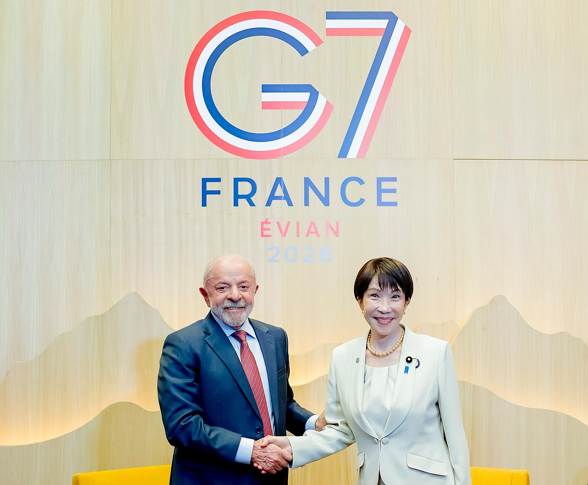
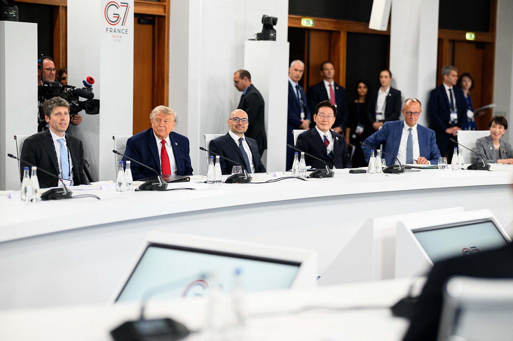

WHAT IS G7?
G7は、
何をする場？
主要国の首脳が、短期間で
方向をそろえる場。
1法律で命令する組織ではない
2首脳が直接、考えをすり合わせる
3共同声明で世界の流れをつくる

BRIDGE ROLE?
つなぐ役は、
できた？
短期間で米国・欧州側の双方と接触。
ただし、接触と仲裁は同じではない。


米国
欧州
G7全体
接触範囲は広い。
でも、仲裁の決着はまだ。
でも、仲裁の決着はまだ。

CRITICAL MINERALS
備蓄だけでは足りない
採掘・精製・流通。どこか一つが詰まると、全体が止まりやすい。
採掘
精製
流通
利用
見える化と早期対応
備蓄・追跡・共同警戒
備蓄・追跡・共同警戒
供給先を増やす
投資・再利用
投資・再利用
SOURCES
主に見た資料
細かいURLは投影せず、
資料の種類だけを示す。
政府発表
外務省
G7関連ページ
G7関連ページ
共同文書
G7重要鉱物
サプライチェーン宣言
サプライチェーン宣言
統計・解説
資源エネルギー庁
資料
資料
海外報道
Reuters / SCMP
Global Times
Global Times
ご清聴ありがとうございました